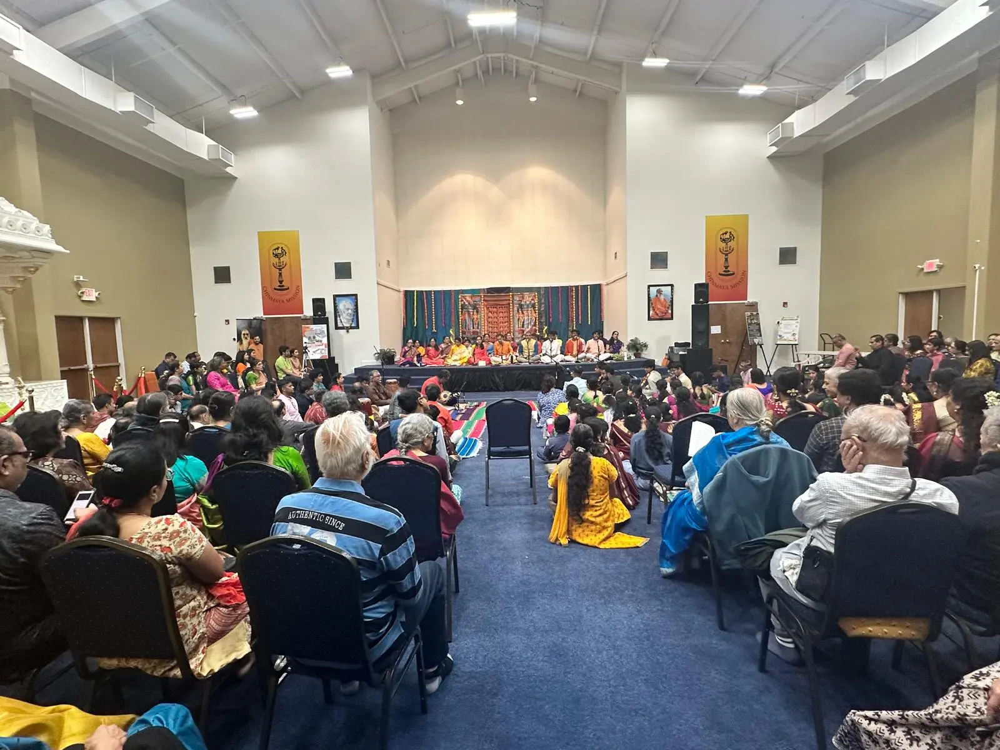

Thyagaraja Aradhana 2026
Atlanta's most beloved Carnatic music gathering returned for its seventh year, drawing over 360 attendees to honor Saint Thyagaraja through the Pancharatna kritis. Held at Chinmaya Gurukul, Cumming — free entry, donations welcome.